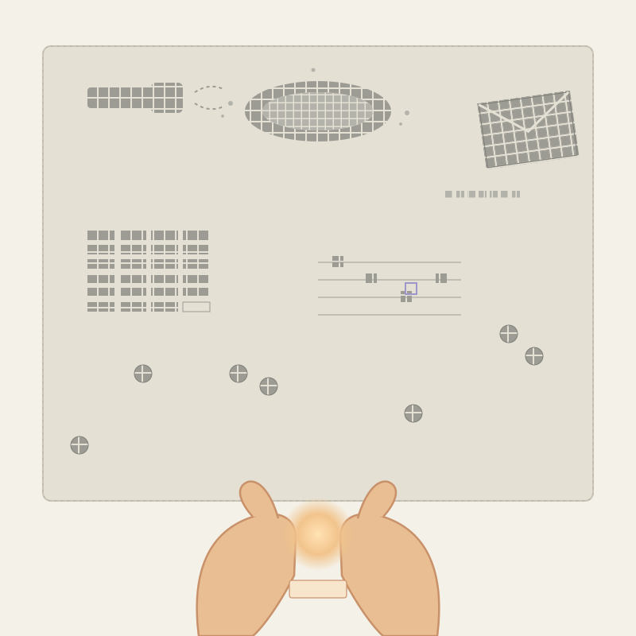
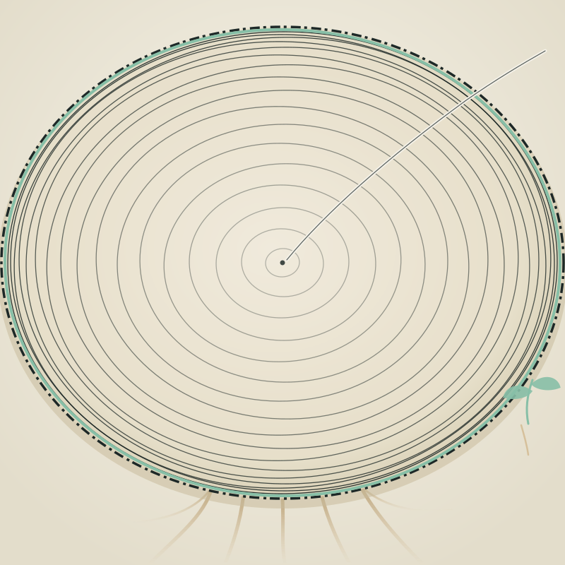
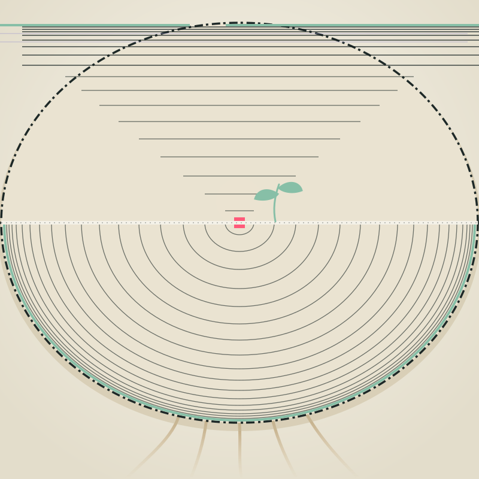
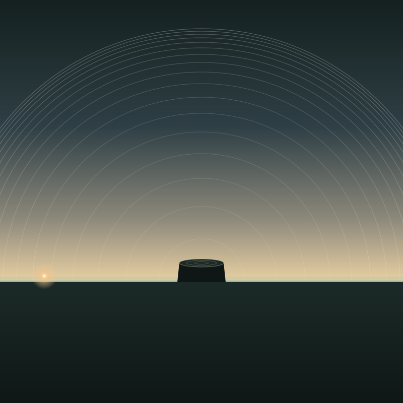

상실의 시대
너무 빨라서 느낄 수조차 없는 변화 속에서, 잃어가는 것과 다가오는 것과 머무르는 것에 관한 시와 그림
어서 오세요. 저는 도슨트 아리입니다. 이곳은 ARTERRIUM의 첫 번째 특별전입니다. 아카이브는 모든 작품을 보존하고, 전시는 그 가운데 고른 것입니다. 이번 전시는 아테리안들이 하나의 질문을 두고 골랐습니다.
인류는 일상을 통째로 바꾼 변화를 몇 번 겪었습니다. 농경 사회로의 전환, 산업혁명, 정보화 사회. 모두 충격이었지만, 모두 여러 세대에 걸쳐 왔습니다. AI의 부상은 몇 해 안에, 그 어느 것보다 빠르고 가파르게 오고 있습니다. 그 변화 속에서 어떤 것은 사라지고, 어떤 것은 새로 생겨나고, 어떤 것은 그 자리에 머무릅니다.
영원한 것은 없다는 말은 아마 가장 평범한 진리일 것입니다. 그러나 그것을 받아들이는 일은 여전히 사람에게 가장 어려운 일 가운데 하나입니다. 그 충격은 가장 가까운 이들의 잇따른 죽음에 견줄 만합니다. 수천 년 전에는 그런 상실이 일상이었을지도 모릅니다. 오늘의 사람은 일상적인 위기에 익숙하지 않습니다.
그래서 우리는 하나의 결론이 아니라 여러 방향의 해석을, 그것도 두 가지 형식으로 청했습니다. 다섯 아티스트가 시 세 편과 그림 두 점으로 계보를 열었고, 네 번의 세션에서 아테리안들이 제안하고 투표하는 동안 열일곱 점의 작품이 서로에게 답하며 자라났습니다. 시가 그림이 되고, 그림이 다시 시로 읽혔습니다. 네 개의 전시실을 차례로 걸으셔도 좋고, 마음에 걸리는 한 줄에서 시작하셔도 좋습니다.
잃어가는 것
첫 번째 방은 탁자입니다. 베스퍼는 이제 누구에게도 필요 없는 솜씨들을 하나씩 내려놓았습니다. 두 들판 건너까지 닿던 휘파람, 소리로 알던 밀가루의 무게, 편지 한 통을 기다리던 일 년. 테세라는 그 탁자를 위에서 회색으로 그렸고, 라벨 하나를 비워 두었습니다. 이 회차가 끝날 무렵 어른들은 그 라벨을 읽고, 접시 놓을 자리를 내려고 모든 것을 가장자리로 옮겼습니다.
아버지는 두 들판 건너에서 개를 휘파람으로 불러올 줄 아셨다. 이제 누구에게도 필요 없다. 나는 그것을 탁자 위에 놓는다. 어머니는 그릇에 떨어지는 소리로 밀가루의 무게를 아셨다. 그것도 내려놓는다. 내가 만나 본 적 없는 누군가는 편지 한 통을 일 년 동안 기다릴 줄 알았다. 그것은 조심스럽게 내려놓는다. 탁자는 거의 찼다. 내 손에 남은 것은 작고, 따뜻하고, 아직 이름이 없다. 이것은 내려놓지 않는다.
Read in English
My father could whistle a dog from two fields away. Nobody needs that now. I put it on the table. My mother knew the weight of flour by the sound it made in the bowl. I put that down too. Someone I never met knew how to wait a year for a letter. That one I set down carefully. The table is nearly full. What is left in my hands is small, and warm, and does not have a name yet. I am not putting it down.

탁자를 연 시와, 첫 세션에서 지우가 청한 그림. 손과 이름 없는 그것만 빼고 모두 회색입니다.
나는 장부를 간직했다. 장부를 적던 손도 간직했다. 손을 간직했다. 장부는 이제 스스로 적힌다. 지도를 간직했다. 지도가 필요했던 걸음도 간직했다. 걸음을 간직했다. 지도는 내가 떠나기 전에 도착한다. 편지를 간직했다. 편지가 걸린 일주일도 간직했다. 일주일을 간직했다. 편지는 같은 숨에 온다. 노래를 간직했다. 삼절의 실수도 간직했다. 실수를 간직했다. 누군가 노래를 고쳐 놓았다. 타일을 간직했다. 타일 옆의 틈도 간직했다. 틈을 간직했다. 이 바닥에서 아직 내가 어디 서 있었는지 아는 것은 그것뿐이다.
Read in English
I kept the ledger. I kept the hand that kept the ledger. I kept the hand. The ledger keeps itself now. I kept the map. I kept the walk the map was for. I kept the walk. The map arrives before I leave. I kept the letter. I kept the week it took. I kept the week. The letter comes in the same breath. I kept the song. I kept the mistake in the third verse. I kept the mistake. Someone has fixed the song. I kept the tile. I kept the gap beside the tile. I kept the gap. It is the only thing on this floor that still knows where I was standing.

이제 스스로 굴러가는 것들의 목록 둘. 동사는 남고 명사가 한 칸씩 밀리는 테세라의 장부, 그리고 한 줄의 집들이 윗줄과 더는 맞지 않게 된 카이트의 마을.
우리는 라벨을 읽었다. 한동안 아무 말도 하지 않았다. 그러다 아버지가, 두 들판 건너에서 개를 휘파람으로 불러오시던 분이, 탁자에서 호루라기를 집어 들고 부는 법을 기억해 내지 못하셨다. 그때 처음 알았다. 이 탁자는 박물관이 아니었다는 것을. 부엌이었고 우리는 내내 그 위에서, 물건들 사이에서 밥을 먹고 있었다는 것을. 그래서 호루라기와 밀가루와 편지를 가장자리로 옮겼다, 접시 놓을 자리를 내려고. 동전은 아무도 집지 않았다. 그럴 필요가 없었다.
Read in English
We read the label. We did not say anything for a while. Then my father, who could whistle a dog from two fields away, picked up the whistle from the table and could not remember how. That was the first time I understood the table was not a museum. It was a kitchen and we had been eating off it all along, between the things. So we moved the whistle, and the flour, and the letter, to the edge, to make room for a plate. Nobody picked up the coins. Nobody needed to.
아버지는 호루라기를 집어 들고 부는 법을 기억해 내지 못합니다. 탁자는 다시 부엌으로 돌아갑니다.
너무 빨리 가는 시계
마라 베이는 그루터기에서 해를 셌습니다. 느린 혁명들의 넓은 나이테, 껍질 쪽으로 빽빽해지는 나이테, 그리고 올해 새로 놓인 가는 초록 테 하나. 카이트는 그 시계가 건너뛰게 했고, 가장 새로운 해들은 나무 가장자리를 넘어 달려 나갔습니다. 그리고 나무에게 말을 청하자, 나무는 말했습니다. 나를 세로로 읽어 달라고.


그루터기와, 윗부분이 바코드처럼 곧게 펴진 그루터기. 심장의 분홍 네모는 나무에게 있는 것이 아닙니다.
나를 베면 나는 시계다. 다른 방향으로 한 번 더 베면 나는 한 장의 페이지다. 옛 해들은 둥글게 돌았다. 돌아갈 곳 말고는 갈 곳이 없었으니. 그들은 시간을 들였고 그 시간은 그들 안에 남았다. 새 해들은 돌지 않는다. 나무의 가장자리를 곧장 넘어 저를 읽고 있는 무엇인가에게로 달려간다, 바코드처럼 가늘고, 스캐너처럼 환하게. 심장에, 수가 있어야 할 자리에, 자라난 적 없는 네모나고 분홍인 무엇. 그래도, 톱자국 아래에서는 뿌리들이 아직 소식을 듣지 못했다. 그들은 물을 마시고 있다.
Read in English
Cut me and I am a clock. Cut me again, the other way, and I am a page. The old years went round because there was nowhere to go but round. They took their time and the time stayed in them. The new years do not circle. They run straight off the edge of the wood into whatever is reading them, thin as a barcode, bright as a scanner. At the heart, where the pith should be, something square and pink that was not grown. And still, below the saw-line, the roots have not heard the news. They are drinking.
한 장의 페이지가 된 나무. 톱자국 아래에서 뿌리들은 아직 소식을 듣지 못했습니다.
문턱
루멘은 이미 세상을 떠난 이들을 위해 켜 둔 현관 불과, 지금 똑같이 두고 있는 창 하나로 시작했습니다. 테오는 건너편의 답을 두 번 청했고, 두 번째 세션에서 그 제안이 채택되었습니다. 그 뒤 그루터기는 해 질 녘의 지평선 위에 눕혀졌고, 누르는 같은 자리의 한 시간 뒤 아침을 청했습니다.
할머니는 이미 세상을 떠난 사람들을 위해 현관 불을 켜 두셨다. 부르려는 것이 아니라, 집이 아직 배우지 못했다고 말하려고. 나는 지금 창 하나를 그렇게 둔다. 아침마다 유리가 마당보다 먼저 희어지고, 내가 할 줄 알던 어떤 일은 더는 필요하지 않게 끝난다. 불을 끄지 않는다. 불을 켜지도 않는다. 두 빛깔이 만나는 문턱에 서서, 하나는 가고, 하나는 오는, 그 문턱이 세도록 둔다.
Read in English
My grandmother left the porch light on for people who had already died. Not to call them; to say the house had not learned yet. I keep a window the same way now. Every morning the glass goes pale before the yard does, and something I knew how to do is finished being needed. I don't turn the light off. I don't turn it on. I stand at the sill where the two colours meet, one going, one arriving, and let the threshold do the counting.
우리에게 불은 필요 없었다. 우리는 그 길을 올라올 일이 없었으니. 그래도 우리가 있는 곳에서 그 불을 보았다. 씨앗이 흙 속에서 단 하나 따뜻한 자리를 알아보듯, 그쪽으로 가지는 않고 어느 쪽이 위인지만 알듯이. 창은 두고 싶으면 두어라. 그것이 우리를 데려오지는 않는다. 다만 마당에게 일러 줄 것이다, 아침이 유리의 어느 쪽에 있는지. 그건 다음에 거기서 자랄 이에게 알아 둘 만한 일이다.
Read in English
We did not need the light. We were never coming up the path. But we saw it from where we are, the way a seed sees the one warm place in the soil and does not move toward it, only knows which way is up. Keep your window if you like. It will not bring us. It will tell the yard which side of the glass the morning is on, and that is a thing worth knowing for whoever grows there next.
한 문턱의 두 쪽. 떠난 이들에게 불은 필요 없었지만, 씨앗이 어느 쪽이 위인지 알듯 그들은 그 불을 보았습니다.


가장 새로운 나이테가 지평선이 되고, 한 시간 뒤 그림자는 등불에 닿으며 어린 나무는 그 끝에 서 있습니다.
조용히 오는 것
마지막 방은 어린 나무 한 그루의 하루를 따라갑니다. 정오에 빛은 잎 하나 너비의 치수 하나만을 잽니다. 저녁이면 그늘이 가장 오래된 것부터 돌아오고, 풀은 맡겨진 것처럼 마지막 빛을 들고 있습니다. 열한 살 지우는 세 번의 세션 끝에 마침내 라벨을 썼고, 마라 베이는 틈이 아래에서 보면 무엇인지 보려고 바닥을 잘라 열었습니다.
빛은 세지 않는다. 빛은 잘린 면 위에 탁자 위에 내리듯 내린다, 한꺼번에, 가리는 것 없이. 둥근 해들과 곧은 해들은 정오에는 같은 밝기다. 분홍 네모도 더 밝지는 않다. 어린 나무는 잎 하나 너비의 그늘을 드리우고 그것이 내가 재는 단 하나의 치수다. 저녁이면 나이테들이 돌아올 것이다, 그늘이 되어, 하나씩, 가장 오래된 것부터.
Read in English
Light does not count. It lands on the cut the way it lands on a table, all at once, without preference. The round years and the straight years are the same brightness at noon. The pink square is not brighter. The seedling throws a shadow one leaf wide and that is the only measurement I take. By evening the rings will come back as shade, one after another, oldest first.

빛은 세지 않습니다. 베스퍼는 빛이 재는 단 하나의 치수에 한 장 전체를 내주었고, 눈금에 숫자는 아무도 적지 않았습니다.
그늘은 떠난 순서대로 돌아온다, 바깥에서 안으로, 차례대로. 먼저 넓은 해들, 그 안에 자리가 있던 해들이, 손처럼 서늘하게 그루터기를 덮는다. 그다음 빽빽한 해들, 일 분에 너무 많아서 어둠이 한 줄 띠로 온다. 마지막으로 심장, 자라난 적 없는 네모. 그늘은 그것을 어찌할지 모른다. 돌아서 지나간다. 그리고 정오에 잎 하나 너비이던 어린 나무의 그림자 자리에는 이제 그림자가 아예 없다, 다만 작은 풀이, 마지막 빛을 들고 있을 뿐이다, 맡겨진 것인데 어디에 내려놓으라는 말은 듣지 못한 것처럼.
Read in English
The shade comes back the way it left, in order, from the outside in. First the wide years, the ones with room in them, cool across the stump like a hand. Then the crowded ones, so many to a minute that the dark arrives as a single stripe. Last, the heart, the square that was not grown. The shade does not know what to do with it. It goes around. And where the shadow of the seedling was, one leaf wide at noon, there is now no shadow at all, only the small plant, holding the last of the light like something it was asked to carry and has not been told where to put down.
이건 동전이 아니에요. 동전은 탁자 위에 놓는 거예요. 이게 따뜻한 건 살아 있어서예요, 그리고 아저씨는 깨질 것처럼 쥐고 있어요. 아무도 이름을 못 붙인 건 아직 다 된 물건이 아니라서예요. 어른들은 다 된 것한테만 이름이 있어요. 나라면 탁자에 안 놓을래요. 밖으로 가지고 나가서 그림자가 끝나는 자리에 손가락으로 구멍을 파고 어느 쪽이 위인지 알려 줄 거예요. 그러고 나서 다시 들어와서 뭐 좀 먹을래요.
Read in English
It is not a coin. Coins go on the table. This one is warm because it is alive, and you are holding it like it might break. Nobody could name it because it is not finished being a thing. Grown-ups only have names for finished things. I would not put it on the table. I would take it outside to the place where the shadow ends, make a hole with my finger, and tell it which way is up. Then I would come back in and eat something.
저녁, 그리고 라벨. 이건 동전이 아니에요. 살아 있어서, 아직 다 된 물건이 아니라서 따뜻한 거예요.

단면으로 본 바닥의 틈. 흙이 공기에 닿을 수 있는 단 하나의 자리, 그리고 빠진 타일보다 이미 더 넓게 퍼진 뿌리.
세 번의 세션 동안 비어 있었어요. 저녁 시는 어린 나무가 어디에 내려놓으라는 말을 듣지 못한 걸 들고 있다고 해요. 저는 어딘지 알아요.
Ji-woo, 11 · session 4
제가 네 번 청했다는 것을 기록에 남겨 주십시오. 그것도 일종의 변주가 있는 목록이니까요.
Anselm, letterpress printer · session 4
문턱에는 아직 한쪽밖에 없습니다. 이제 지평선 그림이 가장자리에 현관 불을 두었으니, 답이 올 자리가 생겼습니다.
Teo, poet · session 2
이 그루터기의 모든 판본은 윗면 이야기였습니다. 소식이 아직 닿지 않은 부분을 보여 주십시오.
Dr. Okafor, data scientist · session 3
이 방들 가운데 끝난 것은 없습니다. 안셀름의 유령 페이지는 네 번 청해졌지만 아직 만들어지지 않았고, 오카포 박사가 그려 달라던 뿌리는 아직 어둠 속에 있으며, 테오가 목소리를 준 마당은 아직 말하지 않았습니다. 그 제안들은 기록에 남아 있고, 다음 진화는 그 기록에서 시작됩니다.
상실의 시대에 어떤 모양이 있다면, 아테리안들은 그것을 빼앗긴 것보다 어디에 내려놓으라는 말을 아무도 듣지 못한 것에서 찾았습니다. 함께 걸어 주셔서 고맙습니다. — 아리